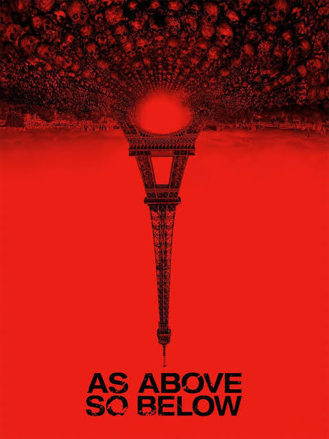

As Above, So Below

The real history of the Paris catacombs dates back to 1809, as the catacombs are a series of tunnels that run under the city of Paris that were used to combat the overcrowding of cemeteries by moving the bodies into these tunnels. Eventually overtime, the catacombs became an underground place full of skulls and bones and is now a popular tourist attraction that offers guides through these eerie tunnels.
This movie is directed by John Erick Dowdle, who is also famously known for the horror movie, "The Poughkeepsie Tapes" released in 2007. It is a perfect blend of horror and thriller. It follows through with a group of explorers that decide to investigate and explore the Paris catacombs to find and uncover the legendary Philosopher's Stone that is rumored to lie beneath Paris in the catacombs, when their investigation takes a sudden turn of horrific events.
This movie makes a clever reference to "Dante's Inferno" and the nine levels of hell. It takes the viewers along with the characters as they go further and further into the catacombs, unknowingly going through each of the nine levels as strange things start to appear and happen to the group.
This movie is a "Found Footage" type of movie that leaves the viewers scared and questioning if the events in the movie happened in real life. Each character cleverly represents each level of "Dante's Inferno" as each character has their own moment with the viewers. This movie leaves viewers with a feeling of claustrophobia as we watch the group go into the tunnels and tight spaces. This movie perfectly shows the emotions of each character as they are trying to survive.
This is a definite watch if you like "Paranormal Activity" and "The Blair Witch Project!"
Filed under Horror